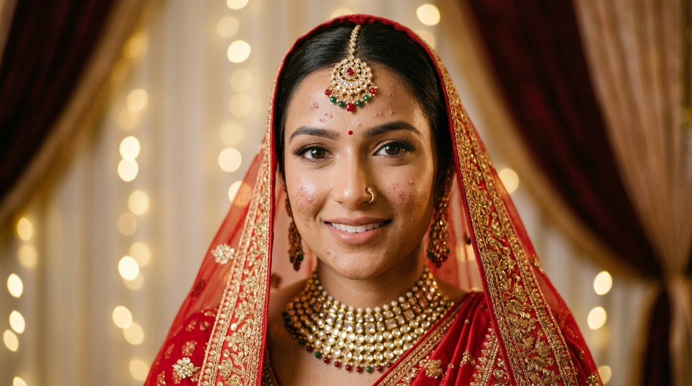
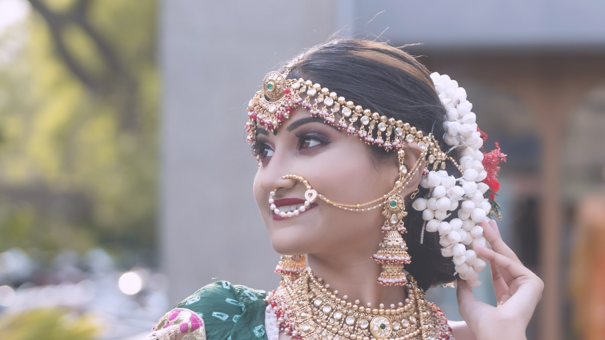

Meet Ai Photoflow — the industry-leading AI photo editor and high-speed AI image editor engineered for professional wedding photographers. Recognized among the top next-gen photo editing apps, this intelligent photo correction app and standalone AI Photoshop editor powerhouse culls 10,000 RAW photos, removes facial blemishes, locks authentic Indian skin tones, and delivers calibrated +5% vibrance in just 15 minutes — completely offline.
Drag the slider to compare unedited RAW (Pimples & Cast) vs. Ai PhotoFlow (Blemish Removal + Natural Smooth Glow & +5% Vibrance)

ORIGINAL RAW (Pimples & Tungsten Cast) AI PHOTOFLOW (Blemish Removal + Smooth Glow)From micro-blink rejections to stage LED white balance, explore every automated function in action.
Computes distance between eyelids across all faces. If any bride, groom, or key parent blinks during flash bursts, the frame is flagged REJECT automatically.

Isolates human skin pixels so bridal makeup and natural complexions are never burned orange, while jewelry and lehenga red embroidery receive a punchy +5% vibrance boost.
Adaptive histogram tone-mapping reveals rich fabric embroidery on dark groom suits and velvet sherwanis without blowing out bride jewelry highlights.
Neutralizes green fluorescent casts and ugly stage RGB spotlights while preserving the intended festive warmth of candlelight and the sacred mandap fire.
Differentiates intentional creamy bokeh backgrounds from accidental camera shake or missed autofocus. Automatically flags blurred frames as REJECT.

Extracts embedded camera EXIF buffers in <15ms for smooth 60fps grid scrolling through 10,000 photos, while half-sized proxies allow instantaneous 100% loupe zoom.
Indian weddings produce 3,000 to 12,000 RAW files under chaotic lighting conditions. Standard tools built for western daylight portraits ruin Indian wedding ceremonies.
Global saturation sliders turn delicate Zardozi embroidery and crimson bridal lehengas into blown-out, detail-less neon blobs.
Tungsten halogens and sacred fire ignite extreme yellow/red casts. Foreign AI attempts auto-white balance and makes Indian skin look jaundiced or burnt orange.
Aggressive contrast curves crush dark velvet fabrics, erasing intricate textures on groom attire.
Uploading 150 GB of RAW files over studio Wi-Fi is agonizing and exposes client photos to third-party cloud servers.
Selectively enhances jewelry, marigold florals, and venue decor while keeping human skin tones naturally creamy and protected.
Isolates Cr [133, 173] and Cb [77, 127] pixels in real-time, locking natural complexion before any color corrections are applied.
Recovers shadow fabrics without clipping stage lighting highlights or chandeliers.
LibRaw decoding and OpenCV matrix operations run natively on your Apple Silicon or NVIDIA PC. Zero cloud dependencies.
Click below to test how our 4-Tier Vision Pipeline analyzes sharpness, eye blinking, and burst duplicates. Use single-hand keyboard shortcuts P, X, U or arrow keys.
SOLO
Founder & Lead Mentor, Quick Art Photography & Academy
Anil Sharma has directed, shot, and post-produced hundreds of high-end wedding films and commercial campaigns across India. Through his studio Quick Art Photography and Quick Art Photography Academy in Siwan, Bihar, he has trained more than 10,000 aspiring videographers and editors.
"Every wedding season, my team would shoot 8,000 to 12,000 RAW photos in 3 days. We were spending 25 to 30 sleepless hours per wedding just sorting files, rejecting eye blinks, and correcting awful halogen lighting. Existing western software kept turning bridal reds into neon and our clients' skin orange. I built Ai PhotoFlow to solve this once and for all."
Industry Veteran
Cinematic Weddings
Students Mentored
How Ai PhotoFlow transforms a chaotic 3-day Indian wedding dump of 10,000 RAW files into a client-ready, color-graded selection in under 15 minutes.
Bypasses sluggish Lightroom catalog databases. Streams 15ms embedded RAW previews straight from your CFexpress Type B or UHS-II SD cards without creating bloated cache files.
15ms Per Frame • 0 Cache LagLaplacian variance detects true subject eye sharpness. Eyelid distance computation (EAR < 0.20) automatically weeds out half-blinks during burst flash sequences on the mandap stage.
Laplacian σ² • EAR < 0.20 RejectIsolates human skin pixels to guarantee bridal makeup never turns neon orange under yellow stage halogens, while boosting wedding red embroidery and velvet sherwanis by +5% vibrance.
Skin Protection • +5% Vibrance1-click sync writes XMP metadata straight to Adobe Lightroom Classic, Capture One, or exports full-resolution color-graded JPEGs with zero quality loss.
Lightroom XMP Sync • Capture OneSee why commercial wedding photography studios in India are leaving legacy cloud apps and switching to local GPU post-production.
| Feature / Capability | Ai PhotoFlow Enterprise | Adobe Lightroom Classic | Cloud AI Tools (Imagen / Aftershoot) |
|---|---|---|---|
| 10,000 RAW Culling Speed | Under 15 Minutes | 12 to 18 Manual Hours | 2 to 4 Hours (Upload + Queue) |
| Internet / Cloud Requirement | 100% Offline (Local GPU) | Offline | Mandatory High-Speed Fiber |
| Indian Skin-Tone Color Science | YCrCb Calibrated (Zero Orange) | Manual HSL Correction | Generic Western Caucasian Presets |
| Halogen & Tungsten Cast Neutralizer | Automatic Chrominance Fix | Manual Gradient Masks | Inconsistent Stage Tint |
| Blink & Sharpness Detection | Laplacian σ² + EAR Eye Tracking | Manual 100% Zoom Clicks | Basic Face Score |
| Client Photo Privacy | Zero Uploads (100% Private) | Local Drive Storage | Uploaded to Foreign Cloud Servers |
| Pricing Structure | Transparent / 14-Day Free Trial | Endless Monthly Rental | Pay-Per-Photo Credit Metering |
See exactly how many days of life and thousands of rupees your studio recovers every single wedding season with Ai PhotoFlow.
Direct sensor read via native C++ LibRaw architecture. No transcoding or third-party camera plugins required.
Over 850 studios and independent cinematographers across Delhi, Mumbai, Patna, Jaipur and Lucknow rely on Ai PhotoFlow every day.
Everything professional wedding studios need to know about speeds, hardware compatibility, and free trial access.
Ai PhotoFlow uses a multi-threaded native C++ LibRaw decoding pipeline that reads embedded full-resolution JPEG previews in 15ms per frame. Instead of generating gigabytes of database catalog previews like Adobe Lightroom, it executes computer vision models (Laplacian sharpness, EAR eye blink detection, and YCrCb chrominance) directly in parallel on your local GPU.
No, absolutely not. Ai PhotoFlow is 100% offline-first. Zero photos or metadata ever leave your computer. You can cull in banquet halls, destination hotels, or remote venues with zero internet connection, guaranteeing complete privacy and zero data leakage.
When you finish your culling session in Ai PhotoFlow, simply click Export to Lightroom XMP. Ai PhotoFlow writes industry-standard sidecar .xmp files with your Star ratings (1-5), Color Labels (Red for Rejects, Green for Picks), and custom color adjustments. When you open Lightroom, all your ratings and edits appear instantly without re-rendering.
macOS: Apple Silicon (M1, M2, M3, M4) or Intel Core i7/i9, macOS 12 Monterey or newer, 8 GB RAM (16 GB recommended).
Windows: Windows 10 or 11 (64-bit), Intel Core i5/i7/i9 or AMD Ryzen 5/7/9, 8 GB RAM, NVIDIA GTX 1060+ or modern AMD GPU recommended for hardware acceleration.
Our 14-Day Free Trial requires no credit card. You get unrestricted access to all 10 engine modules, 6 AI culling rules, and the complete color protection engine to test on your upcoming live wedding projects.
Sign in to unlock 14-Day Free Trial & instant desktop download
Enter your studio details below to activate your 14-Day Free Trial and start your download immediately.